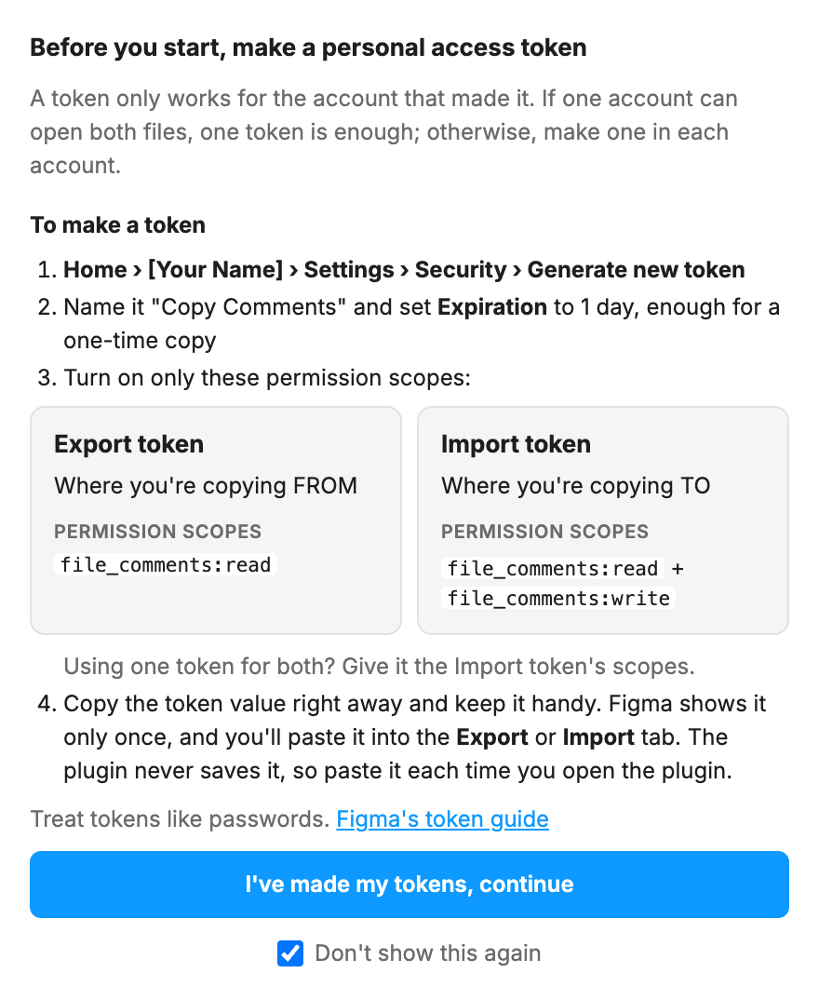
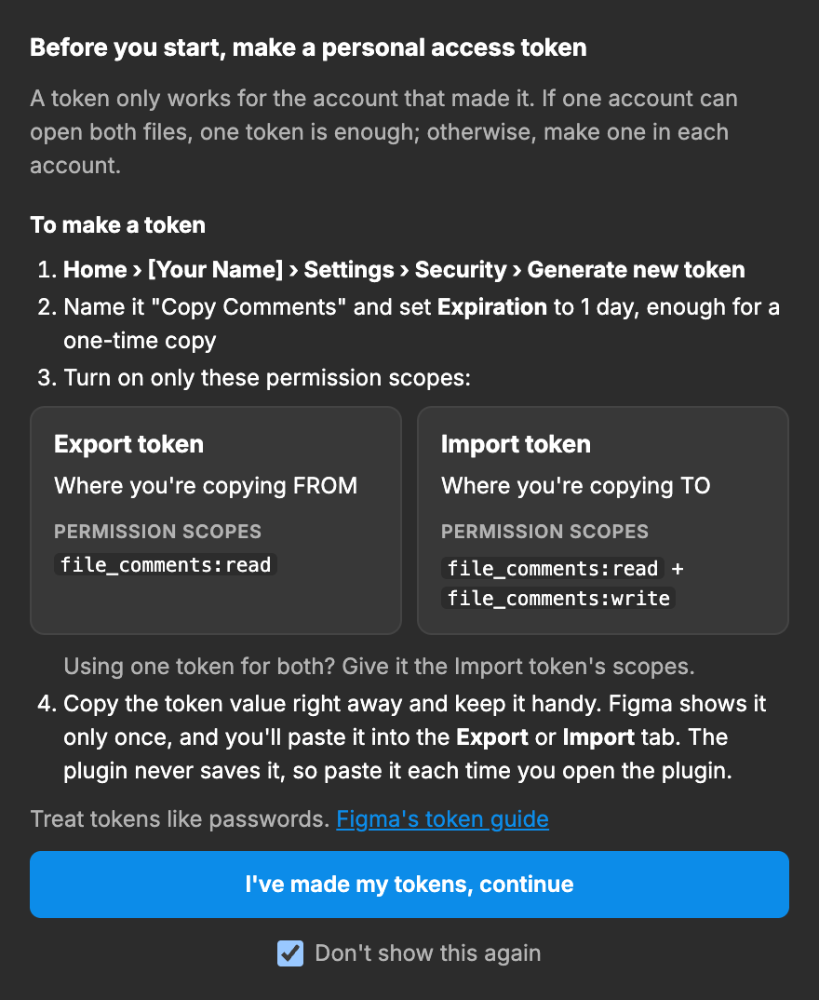

Setup screen
When The first time someone opens the plugin, and whenever they click Token setup guide.
Before you start, make a personal access token
A token only works for the account that made it. If one account can open both files, one token is enough; otherwise, make one in each account.
To make a token
Home › [Your Name] › Settings › Security › Generate new token
Name it "Copy Comments" and set Expiration to 1 day, enough for a one-time copy
Turn on only these permission scopes:
Export token
Where you're copying FROM
PERMISSION SCOPES
file_comments:read
Import token
Where you're copying TO
PERMISSION SCOPES
file_comments:read + file_comments:write
Using one token for both? Give it the Import token's scopes.
Copy the token value right away and keep it handy. Figma shows it only once, and you'll paste it into the Export or Import tab. The plugin never saves it, so paste it each time you open the plugin.
Treat tokens like passwords. Figma's token guide
I've made my tokens, continue
Don't show this again
setup

